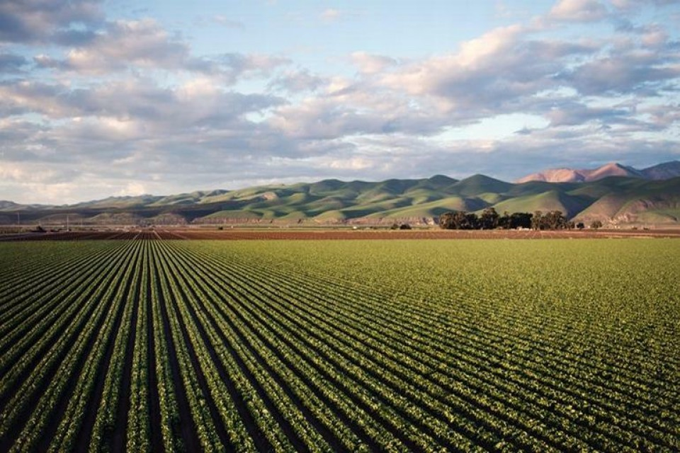

Portugal faz parte da União Europeia (UE) e adotou o Euro como sua moeda. A economia do país passou por reformas significativas para se modernizar e se adaptar às mudanças globais, tornando-se uma economia estável e em crescimento. No entanto, como muitos países, Portugal também enfrenta desafios econômicos, como o desemprego e a dívida pública, que têm sido foco de políticas governamentais e esforços para impulsionar o crescimento econômico.
Setor de Serviços:
- O setor de serviços é o maior contribuinte para a economia portuguesa, respondendo por uma parcela significativa do Produto Interno Bruto (PIB). Este setor inclui turismo, finanças, tecnologia da informação, educação e serviços públicos. O turismo é particularmente importante, com Portugal atraindo visitantes de todo o mundo devido às suas belas paisagens, história rica e clima ameno.
Agricultura e Pesca:
- Embora a agricultura represente uma parte relativamente pequena do PIB, Portugal produz uma variedade de produtos agrícolas, como vinho, azeite, frutas, vegetais e cortiça. A pesca também desempenha um papel importante, com uma indústria pesqueira significativa ao longo da extensa costa de Portugal.

Energia:
- Portugal tem feito esforços para diversificar suas fontes de energia e promover a energia renovável. A energia eólica, solar e hidrelétrica têm crescido em importância, tornando o país mais sustentável e reduzindo sua dependência de combustíveis fósseis.
Construção Civil e Imobiliário:
- O setor da construção civil e imobiliário desempenha um papel crucial na economia portuguesa, especialmente devido ao aumento do turismo e ao crescimento populacional em algumas áreas urbanas.
Setor Financeiro:
- O sistema financeiro português inclui bancos nacionais e estrangeiros, instituições de crédito e seguros. Lisboa é o centro financeiro do país, com uma bolsa de valores ativa, a Bolsa de Valores de Lisboa.
Tecnologia e Startups:
- Portugal tem visto um aumento no setor de tecnologia e startups nos últimos anos. Cidades como Lisboa e Porto têm se destacado como hubs de inovação, atraindo investidores e empreendedores de todo o mundo.
Comércio Exterior:
- Portugal é um país orientado para a exportação, com seus principais parceiros comerciais sendo outros países da União Europeia, como Espanha e França. Os principais produtos de exportação incluem veículos, produtos químicos, alimentos e bebidas, e máquinas e equipamentos.